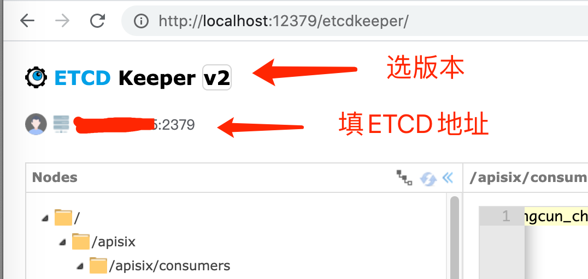

Etcd 分布式KV数据库
安装
单节点，Docker版
docker run \
--name=etcd \
--volume=/Users/jeff.chen/opt/etcd/etcd-data/:/etcd-data \
-p 2379:2379 \
-p 2380:2380 \
--restart=always \
-d quay.io/coreos/etcd:v3.3.14 etcd \
--data-dir=/etcd-data \
--advertise-client-urls http://0.0.0.0:2379 \
--listen-client-urls http://0.0.0.0:2379 \
# --force-new-cluster # 可选，用于服务异常后的数据恢复
- --data-dir 数据存储目录，这些数据包括节点ID，集群ID，集群初始化配置，Snapshot文件，若未指定--wal-dir，还会存储WAL文件
- --name 节点名称
- --listen-peer-urls 监听URL，用于与其他节点通讯
- --advertise-client-urls 告知客户端url, 也就是服务的url
- --initial-advertise-peer-urls 告知集群其他节点url
- --initial-cluster-token 集群的ID
- --initial-cluster 集群中所有节点
- --force-new-cluster 启动一个新的集群
集群
- etcd01: 10.0.1.10
- etcd02: 10.0.1.11
- etcd03: 10.0.1.12
$ etcd --name etcd01 --initial-advertise-peer-urls http://10.0.1.10:2380 \
--listen-peer-urls http://10.0.1.10:2380 \
--listen-client-urls http://10.0.1.10:2379,http://127.0.0.1:2379 \
--advertise-client-urls http://10.0.1.10:2379 \
--initial-cluster-token etcd-cluster-1 \
--initial-cluster etcd01=http://10.0.1.10:2380,etcd02=http://10.0.1.11:2380,etcd03=http://10.0.1.12:2380 \
--initial-cluster-state new
使用
在容器内执行
# 查看版本，默认API版本是v2，如果要用v3，需要在环境变量中设置ETCDCTL_API=3
etcdctl --version
# 指定目录Key一览
etcdctl ls /your/key/path
# 设置KV
etcdctl set /ops-event-web ops-event-web
# 读取指定Key
etcdctl get /ops-event-web # 反馈：ops-event-web
# 删除指定Key
etcdctl rm /ops-event-web
Web UI
基于etcdkeeper，访问http://localhost:12379
# docker启动
docker run -d --name etcdkeeper \
-p 12379:8080 \
evildecay/etcdkeeper

数据迁移
- 停止待迁移节点上的etc进程；
- 将数据目录打包复制到新的节点；
- 更新该节点对应集群中peer url，让其指向新的节点；
- 使用相同的配置，在新的节点上启动etcd进程
# 备份
etcdctl backup --data-dir /etcd-data/ --backup-dir /etcd_backup/
常见故障
启动时大量报request sent was ignored (cluster ID mismatch，节点无法启动
可能原因：节点间通信失败，导致集群无法拉起 解决方案：
- 删除data-dir 会丢失原数据，但是节点能启动，再从其他节点同步数据过来
- 启动时加参数--force-new-cluster 强制单节点启动，忽略原集群配置，用于保留数据
数据导入后为空
可能原因：备份使用V3 API，但是原节点是V2 API在跑。V3的备份db和V2的读wal是不同策略 解决方案：使用完整的data-dir备份，通过force-new-cluster拉起单节点
参考
- Github官网 https://github.com/etcd-io/etcd
- 国人翻译的手册 https://doczhcn.gitbook.io/etcd/
- etcdkeeper官网 https://github.com/evildecay/etcdkeeper